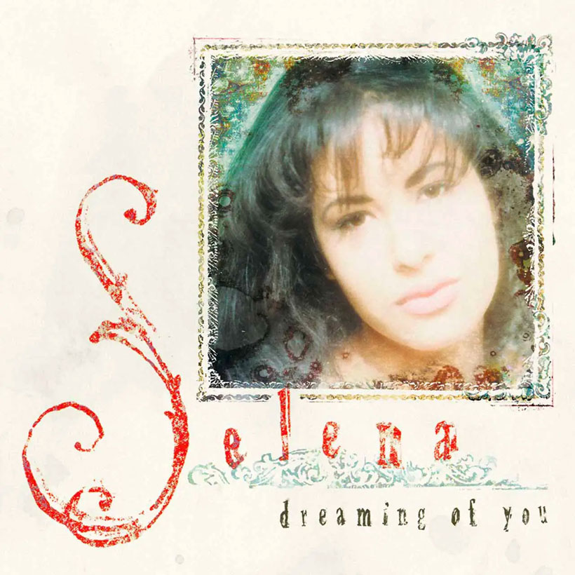

Estimado lector sea bienvenido a mi paguina en el cual contare un poquito de mi vida tambien miraremos lo que me gusta hacer y dams de mi vida, espero les guste y sea de su agrado.
Hola todos contare un poquito de mi vida. naci en la ciudad de Guatemala el 17 de agosto de 2007, tengo 18 años y actualmente estoy estudiando la carrera de Perito en Informatica en el Centro Educativo Laboral Kinal, mi familia esta conformada de las siguientes personas mi padre que se llama Juan Bran y mi tia madre que se llama Adriana Bran, tengo un hermano mayos el cual se llama Josue Reyes, la vida me a dado duros golpes los cuales iniciaron a la edad de 7 años la primera fue la muerte de mi madre y a los 9 años muere mi abuela pero mi familia es muy divertida y siempre esta para mi en todo momento,
Esta historia comienza el 28 de febrero del 2015, ese dia mi vida cambio por completo, recuerdo que era un sabado por la tarde y estaba en una celebracion de Bautizo mi madre dias antes fue internada en el hospital rusvelt pero ese sabado fue diferente ya que mi padre y mi tia junto con mi abuela materna fueron a visitarla al hospital por la tarde y haeso de las 4 de la tarde mi tia llamo a mi abuela paterna para decirle que mi madre habia fellecido, pero al primcipio no me queria decir fue hasta la noche antes de salir a la funeraria me llamo a mi cuarto y al lado de mi abuela y de mi tia me dijeron que mi mama habia fallesido esas palabras para mi fueron muy duras y luego de eso toda mi familia se vistio de negro y salimos hacia la funeraria el cuerpo de mi mama estaba ya en la funeraria ya lista para ser vestida con la ropa que mi familia avia elejido, luego nos hisieron pasar a una sala pequeña para que solo la familia mas interna la pudiera ver ya que en nuestra familia tenemos la tradicion de que slo la familia interna como mi padre, mi tia, mis abuelo y yo miremos a nuestros seres querido, luego de esto pasaron el cuerpo de mi madre para que solo nos acompararan nuestro amigos al dia siguiente fue la misa de cuerpo presente el cual la presidio un padre que me dio un consejo que fuera valiente, posteriormente fue el entierro de mi mama en el cementerio general posteriormente en el 2025 las cenizas pueron trasladadas a un cementerio priovado familiar que comporo mi padre despues de la muerte de mi abuelo paterna. Desde la fecha de su muerte hasta hoy es muy duro ya que no poderla ver y abrazarla o escuchar su vos o un consejo duele por eso a todos mis lectores les digo que si todavia tienen a su mama abrazenla y diganle cuanto la quieren porque cuando hase falta es muy duro.
Lo que mas me gusta hacer en mis tiempos libres es pasar tiempo com mi familia ya que ellos son lo mas importante para mi ya que esos momentos nunca se repiten en toda la vida, tambien me gusta muchas coas dentro de tosas estan las siguientes cosas:
